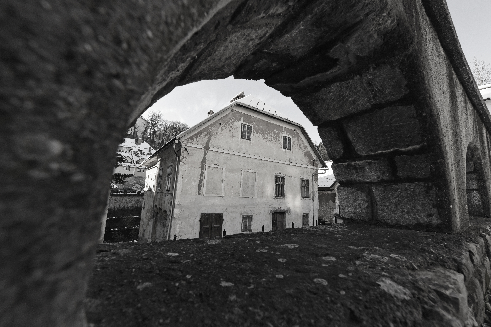

Koširjev mlin je imel štiri kamne, vsakega s svojim pogonskim kolesom. Leta 1923 so jih nadomestila tri večja, zamenjal pa se je tudi način mletja. Leta 1938 so zgradili vodno turbino, s katero so domačijo oskrbovali z elektriko. Ob denacionalizaciji je bila večina opreme, vključno s turbino, demontirana in odnešena, danes je ohranjen samo del ogrodja in nekaj mlinskih kamnov.

Leta 1945 je v nacionaliziranem Koširjevem mlinu začelo delati elektroradijsko podjetje ELRA, ki se je leta 1960 preselilo v nekdanji uršulinski samostan. (Planina, 1962).Po drugi svetovni vojni so na današnje mesto postavili avtobusno postajo, podrli so tudi kapucinsko obzidje. Leta 1959 so tu zgradili novo blokovsko naselje Novi Svet.
Leta 1954 je Koširjev mlin prenehal obratovati (Planina, 1962), podrli so tudi stavbo (“Koširjevo bajto” kot jo imenuje Štukl v Knjigi hiš) na koncu vrta.
Objekte pri vodnih pogonih Koširjevega in Krevsovega mlina so pustili s spremenjeno namembnostjo. Po denacionalizaciji sta dediča, Ljudmila in Vladimir Košir, objekte odkupila in jih delno obnovila.